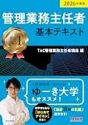
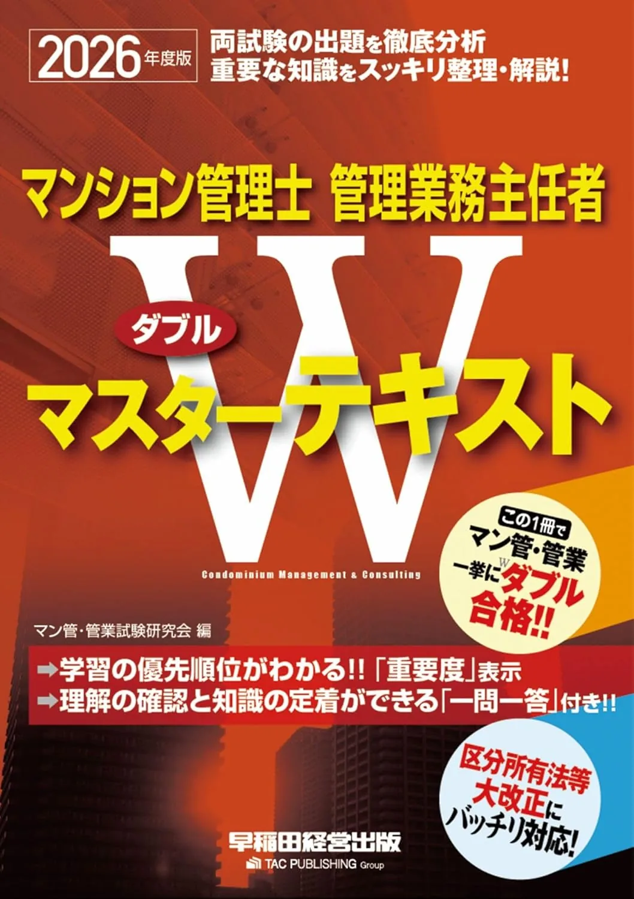
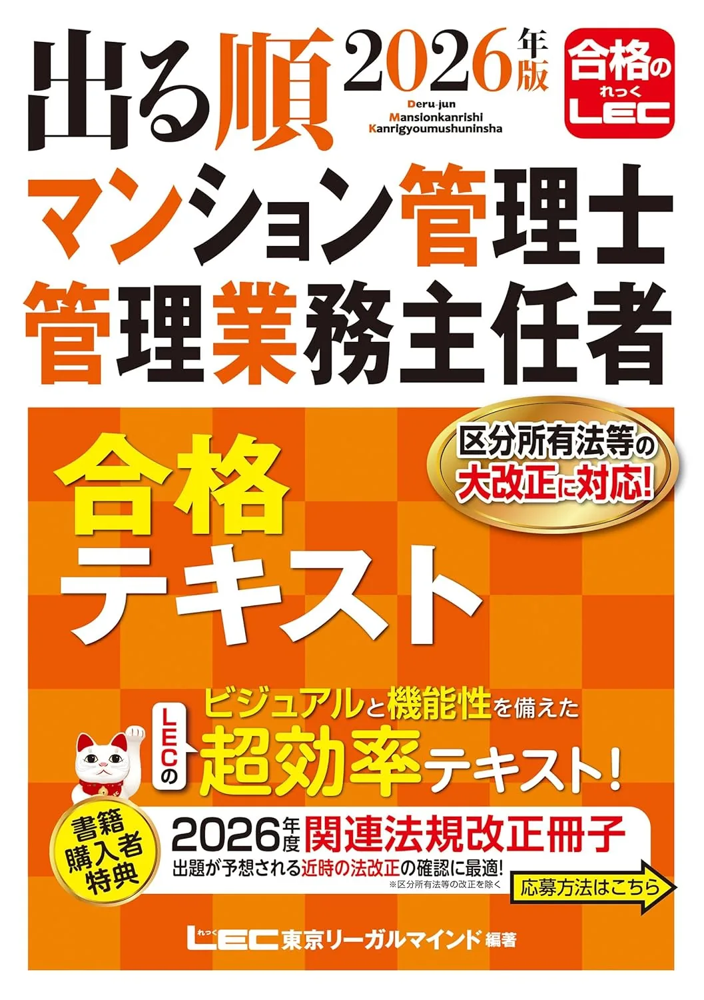

管理業務主任者試験の初学者向け教材セット3選【2026年度版·テキスト+問題集】
管理業務主任者試験の初学者教材は、テキスト1冊+問題集1冊+当サイト無料演習の3点が扱いやすい基本形です。令和8年度は12月6日（日）13:00〜15:00·5出題分野·50問120分·受験手数料8,900円です。本記事はTAC·Wマスター·LECの3セットを、合計予算·章立てのつながりで比較します。価格は執筆時点（2026-06-15）のAmazon税込参考です。
この記事の信頼性について
| 執筆 | 管業マスター編集部（資格学習サイトの編集チーム） |
|---|---|
| 確認 | 公式情報確認担当（公開前に一次情報との照合を行う担当者） |
| 事実確認日 | 2026-06-15 |
| 主な参照元 |
1初学者の最小構成
初学者は「要項確認→テキスト1冊→問題集1冊→無料演習→50問通し」の順で段階投入します。受験資格·試験日·5出題分野は管理業務主任者試験センター（公式）の要項PDFで先に1枚にまとめ、学習カレンダーと申込手続きカレンダーは分離してください。3セットを同時購入せず、テキスト到着後2週間で使い心地を確認してから問題集を追加するのが定番です。当サイトの分野別演習10問で現在地を記録してから購入すると、セット選びの失敗が減ります。
初学者向け教材セット3選（比較）
価格·在庫は執筆時点（2026-06-15）のAmazon税込参考です。購入前に必ず販売ページで最新版を確認してください。
| 順位 | 商品名 | 価格（税込参考） | ページ数 | 向いている人 |
|---|---|---|---|---|
| 1 | TAC2冊セット（基本テキスト+項目別過去8年） | 約6,050円（2冊合計·税込参考） | 860 | 管業初受験でTAC系列の縦串を揃えたい人 |
| 2 | Wマスター2冊セット（テキスト+過去問集） | 約8,030円（2冊合計·税込参考） | — | マン管併用·解説厚めの2冊を縦串で揃えたい人 |
| 3 | LEC出る順2冊セット（速習テキスト+分野別過去問） | 約7,150円（2冊合計·税込参考） | — | 論点整理から分野別演習へ進みたい人 |

TAC2冊セット（基本テキスト+項目別過去8年）
- 基本テキストと過去8年の章·項目対応が取りやすい
- 3セットの中で合計予算を抑えやすい
- 5出題分野を丁寧に1周する初学者向け
セット問題集: 2026年度版 管理業務主任者 項目別過去8年問題集 問題集を見る

Wマスター2冊セット（テキスト+過去問集）
- Wマスターテキストと過去問の章立て相性がよい
- マン管合格者の45問演習にも使い分けやすい
- 適正化法·委託契約の横断整理に向く
セット問題集: 2026年度版 Wマスター過去問集 問題集を見る

LEC出る順2冊セット（速習テキスト+分野別過去問）
- 出る順テキストと分野別過去問の縦串が明確
- 週15問の分野別 drill と相性がよい
- TAC·Wマスターとの比較選択肢
セット問題集: 2026年版 出る順管理業務主任者 分野別過去問題集 問題集を見る
23セット比較の見方
- 予算最優先ならTAC2冊セット（約6,050円）
- マン管併用で解説厚めならWマスター2冊（約8,030円）
- 論点整理型ならLEC出る順2冊（約7,150円）が目安
いずれも2026年度版表記を購入前に確認し、中古は版·書き込み·付属解答の有無を販売ページで確認してください。比較表で章立てと5出題分野の対応を見たうえで、週8〜10時間の計画に合うセットを1つに絞ってください。
3TAC2冊セット：基本テキスト+項目別過去8年
「2026年度版 管理業務主任者 基本テキスト」（3,190円税込参考）と「2026年度版 管理業務主任者 項目別過去8年問題集」（2,860円税込参考）の組み合わせです。5出題分野を860ページで丁寧に学び、演習は項目別過去8年へつなげやすいのが強みです。TAC系列で章と過去8年項目の対応が取りやすく、初学者の第1セットとして選ばれやすい構成です。
向いている人：管業初受験で予算を抑えつつTAC系列の縦串を揃えたい人。
4Wマスター2冊セット：テキスト+過去問集
「2026年度版 マンション管理士·管理業務主任者 Wマスターテキスト」（3,630円税込参考）と「2026年度版 Wマスター過去問集」（4,400円税込参考）の組み合わせです。マン管合格者の45問演習やW受験設計にも使い分けやすい構成です。適正化法·委託契約の横断整理に向き、社会人独学のメイン教材候補になります。
向いている人：解説厚めの2冊で5分野をじっくり1周したい人。
5LEC出る順2冊セット：速習+分野別過去問
「2026年版 出る順管理業務主任者 速習テキスト」（約4,400円税込参考）と「2026年版 出る順管理業務主任者 分野別過去問題集」（2,750円税込参考）の組み合わせです。管業試験·分野別過去問の記事の週15問と相性がよく、分野別 drill の設計がしやすいです。出る順系列で頻出論点を整理してから演習へ進みたい人向けの第3の選択肢です。
向いている人：論点整理から演習へ進みたい人。
6購入順序の具体例（6月開始）
例：6/15要項30分→6/21委託契約10問→7/5（土）テキスト決定→7/19（土）問題集追加→9月から50問120分通しを月1回。テキスト到着後2週間で第1章+演習10問を試し、読みにくければ別セットへ切り替えてください。試験手数料8,900円は教材予算とは別行で管理します。申込締切（Web9/30·郵送8/28消印）は手続きカレンダーに先に登録し、学習量と混同しないでください。
7購入前チェックリスト
購入前に以下を確認してください。
・2026年度版（最新版）か
・管理業務主任者試験専用か
・2冊セットの章·項目対応が取れるか
・Amazon在庫·価格（執筆時点と異なる場合あり）
・週8時間以上確保できるか（不足ならstudy-plan-1year記事を検討）
・購入直前にAmazon販売ページで版表記·在庫状況を再確認してください。3冊同時購入は避け、テキスト到着後2週間の試用結果で問題集を追加する順序を守ってください。
8よくある質問
初学者は何を最初に買うべきですか？
通信講座は最初から必要ですか？
教材セットの予算目安はいくらですか？
記事の基本情報
| ジャンル | 学習計画 |
|---|---|
| タグ | 学習計画 / 試験対策 |
公式情報の確認
公式情報の確認：管理業務主任者試験の最新情報は、管理業務主任者試験センター（公式）などの公式情報を必ず確認してください。本人に割り当てられた試験会場は受験票の表記が正本です。